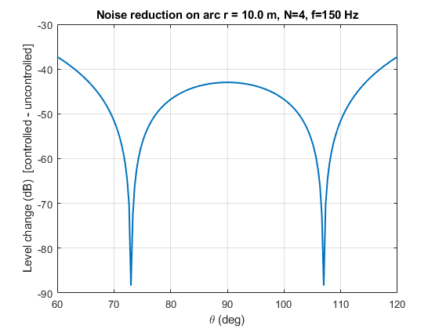
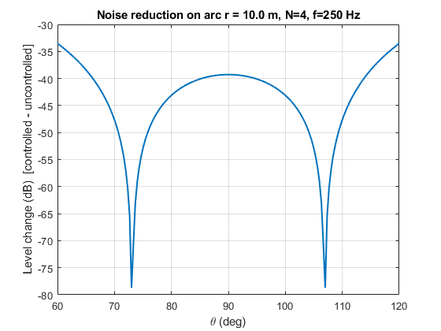
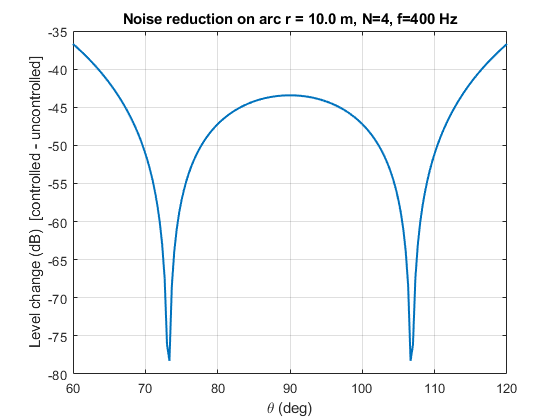
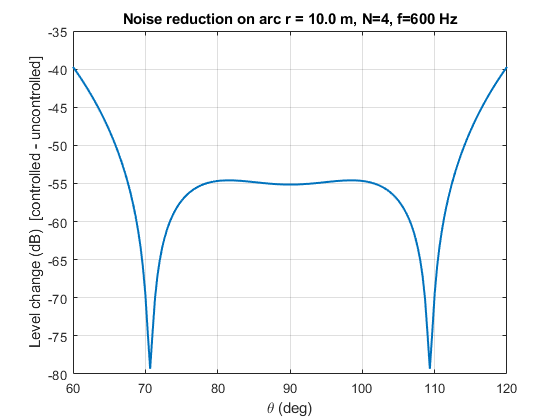
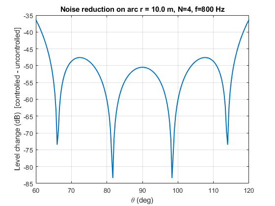
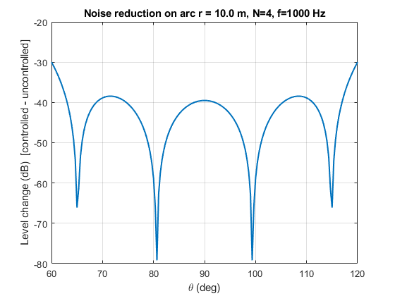

Contents
- Quiet-Zone ANC with Loudspeaker Array (free-field model)
- -------------------- Parameters ---------------------------
- -------------------- Helper inline functions ---------------------------
- -------------------- Geometry ---------------------------
- -------------------- Solve and plot per frequency ----------------------
- -------------------- Heatmap over angle & frequency --------------------
- -------------------- Optional: show array & arc ------------------------
Quiet-Zone ANC with Loudspeaker Array (free-field model)
Reproduces the scenario: one primary monopole + N secondary monopoles. I design complex weights H(ω) by least squares to minimize pressure on an angular arc (the "quiet zone" wedge) and plot the achieved reduction.
clear; clc; close all;
-------------------- Parameters ---------------------------
c0 = 343; % m/s, speed of sound freqs = [150 250 400 600 800 1000]; % Hz to evaluate N = 4; % number of secondary loudspeakers spkX = [-0.20 -0.10 0.10 0.20]; % x-locations [m] spkY = [ 0 0 0 0 ]; % y-locations [m] rqz = 10; % radius (m) where we evaluate on an arc thMin = deg2rad(60); % quiet-zone lower angle (rad) thMax = deg2rad(120); % quiet-zone upper angle (rad) M = 181; % number of angular samples on the arc lambda = 1e-3; % Tikhonov regularization (0 = plain LS) % Primary monopole location (origin by default) srcXY = [0; 0];
-------------------- Helper inline functions ---------------------------
kfun = @(f) 2*pi*f/c0; % wavenumber pol2cartM = @(r,th) [r.*cos(th); r.*sin(th)]; dist = @(P,Q) vecnorm(P - Q, 2, 1); % distance between 2xM and 2x1 % Primary field at points: b_m = e^{-j k r}/r primaryField = @(pts, f) exp(-1j*kfun(f)*dist(pts,srcXY))./dist(pts,srcXY); % Secondary matrix at points: G_{m i} = e^{-j k r_i}/r_i secMatrix = @(pts, spk, f) ... cell2mat(arrayfun(@(i) ... (exp(-1j*kfun(f)*dist(pts, spk(:,i)))./dist(pts, spk(:,i))).', ... 1:size(spk,2), 'uni', 0));
-------------------- Geometry ---------------------------
thetas = linspace(thMin, thMax, M); arcXY = pol2cartM(rqz, thetas); % 2xM evaluation points spkXY = [spkX; spkY]; % 2xN speaker positions
-------------------- Solve and plot per frequency ----------------------
NR = zeros(numel(freqs), M); % dB change (controlled - uncontrolled) for ii = 1:numel(freqs) f = freqs(ii); % Build b (primary) and G (secondary) for this frequency b = primaryField(arcXY, f).'; % Mx1 G = secMatrix(arcXY, spkXY, f); % MxN % Least-squares weights: H* = -(G^H G + λI)^{-1} G^H b H = -( (G'*G + lambda*eye(N)) \ (G'*b) ); % Nx1 % Residual pressure on the arc p0 = b; % uncontrolled primary pc = b + G*H; % controlled field NR(ii, :) = 20*log10(abs(pc)).' - 20*log10(abs(p0)).'; % Plot angle sweep at this frequency figure('Name', sprintf('Reduction at %d Hz', f)); plot(rad2deg(thetas), NR(ii,:), 'LineWidth', 1.5); grid on; xlabel('\theta (deg)'); ylabel('Level change (dB) [controlled - uncontrolled]'); title(sprintf('Noise reduction on arc r = %.1f m, N=%d, f=%d Hz', rqz, N, f)); end






-------------------- Heatmap over angle & frequency --------------------
figure('Name','Reduction Heatmap'); imagesc(rad2deg([thMin thMax]), [freqs(1) freqs(end)], NR); axis xy; colorbar; colormap turbo; xlabel('\theta (deg)'); ylabel('Frequency (Hz)'); title('ANC reduction across angle & frequency (negative = good)');
Error using feval
Unrecognized function or variable 'turbo'.
Error in colormap (line 91)
arg = feval(arg);
Error in simulation (line 70)
axis xy; colorbar; colormap turbo;
-------------------- Optional: show array & arc ------------------------
figure('Name','Geometry'); plot(spkX, spkY, 'ks', 'MarkerFaceColor','k'); hold on; plot(arcXY(1,:), arcXY(2,:), 'r-'); plot(srcXY(1), srcXY(2), 'bo', 'MarkerFaceColor','b'); axis equal; grid on; xlabel('x (m)'); ylabel('y (m)'); legend('Speakers','Quiet-zone arc','Primary source','Location','best'); title('Geometry (free-field monopole model)');